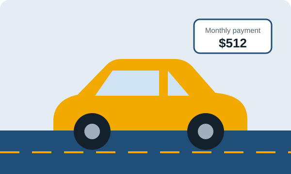

Loan calculator for a car
See what a car will really cost each month. Enter the price, your down payment and the interest rate. The result updates as you type.
Free, private, and built on the same formula lenders use.

Estimated monthly payment
for the full loan term
- Amount you borrow
- Sales tax
- Total interest
- Total of all payments
- Total cost with down payment
Yearly payoff schedule
| Year | Principal paid | Interest paid | Balance left |
|---|
How a car loan calculator works
A car loan calculator turns five numbers into one answer: what you will pay every month. It first works out how much you need to borrow. That is the vehicle price plus sales tax and fees, minus your down payment and trade-in.
It then spreads that amount over the loan term at your interest rate. Early payments are mostly interest. Later payments are mostly principal, which is why the yearly schedule above shows interest shrinking each year.
The car loan payment formula
M is the monthly payment, P the amount borrowed, r the monthly rate (APR ÷ 12), and n the number of monthly payments. Example: borrowing $26,000 at 6.5% for 60 months gives a payment of about $509.
Ways to lower your car payment
- Put more down. Every extra $1,000 down cuts your payment and your interest.
- Improve your rate. Get pre-approved at a bank or credit union, then ask the dealer to beat it.
- Choose a shorter term if you can. A 48-month loan costs far less interest than an 84-month loan.
- Negotiate the price, not the payment. A lower price helps in every line of the calculator.
- Use your trade-in. In many states it also lowers the amount that is taxed.
Car loan guides

Car loan calculator FAQ
How do I calculate a car loan payment?
Subtract your down payment and trade-in from the vehicle price, add sales tax and fees, then divide the loan into equal monthly payments that include interest. Our car loan calculator does this instantly using the standard amortization formula.
What is a good interest rate for a car loan?
Rates depend on your credit score, loan term, and whether the car is new or used. Borrowers with strong credit usually get the lowest rates, so compare offers from a bank, a credit union, and the dealer before you sign.
What is the best loan term for a car?
Shorter terms such as 36 to 60 months cost less interest overall. Longer terms of 72 to 84 months lower the monthly payment but increase total interest and the risk of owing more than the car is worth.
How much should I put down on a car?
Many buyers aim for about 20% on a new car and 10% on a used car. A bigger down payment reduces your loan, your monthly payment, and the interest you pay.
Does this calculator include sales tax and fees?
Yes. Enter your local sales tax rate and any documentation or registration fees. They are added to the amount you borrow.
Is the car loan calculator free?
Yes. It is free, needs no sign-up, and runs entirely in your browser. Nothing you type is sent or stored.